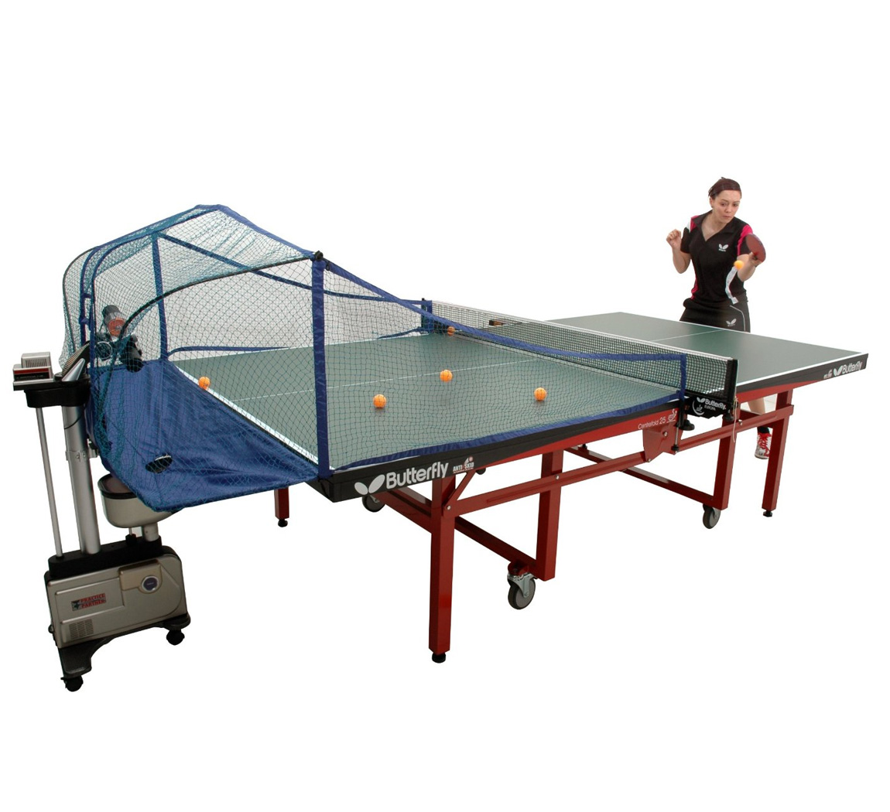
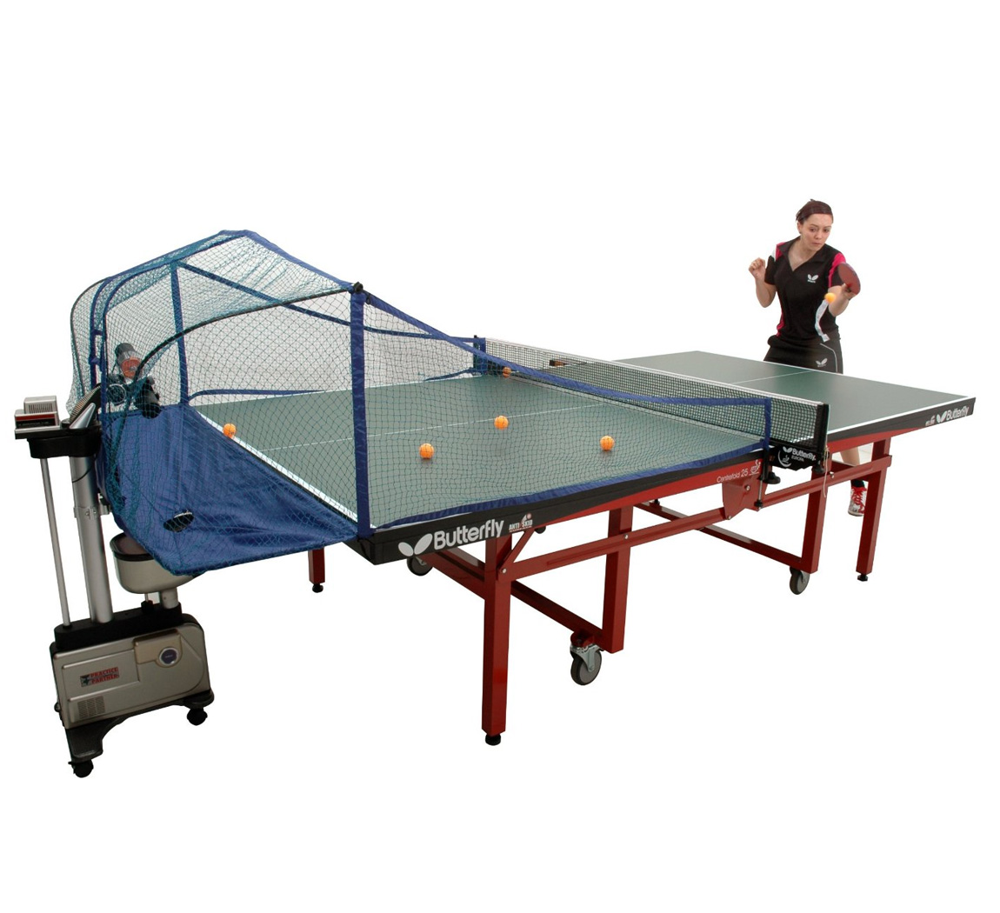

My Name is Aakaash. I was born in San Jose, but now I live in Fremont I am a sophomore at Summit Rainier High School. I am an Indian American. My Parents came from India. Throughout my school years I have been to 6 schools. For Kindergarten I went to Challenger. From Kindergarten to 4th grade I went to Mission Valley, a public school in Fremont, near my house. For 5th grade I went KIPP a charter school in San Jose. For 6th grade I went to study in India. For 7th and 8th grade, I went to a private school in Palo Alto. And for High School, I am at Summit Rainier High School.I have one brother. My brother is in his 2nd year of college. He goes to the Univerity of Pennsylvania, Wharton and studies Business and Economics. I play 2 sports, Basketball and Table Tennis. I am better at Table Tennis. I play in a championships league and I might go to the Nationals this coming summer. In Basketball, I play for the school team, but I am not that good. I have a table tennis table at my house. And I have a table tennis robot to help me practice my table tennis skills.

 
